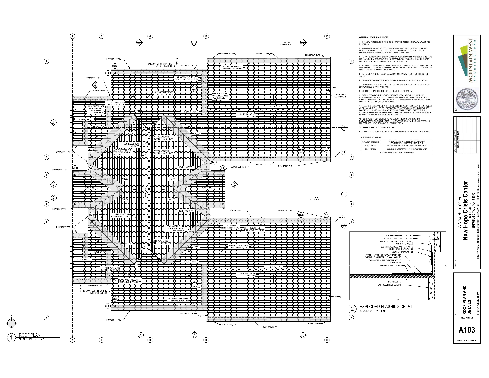
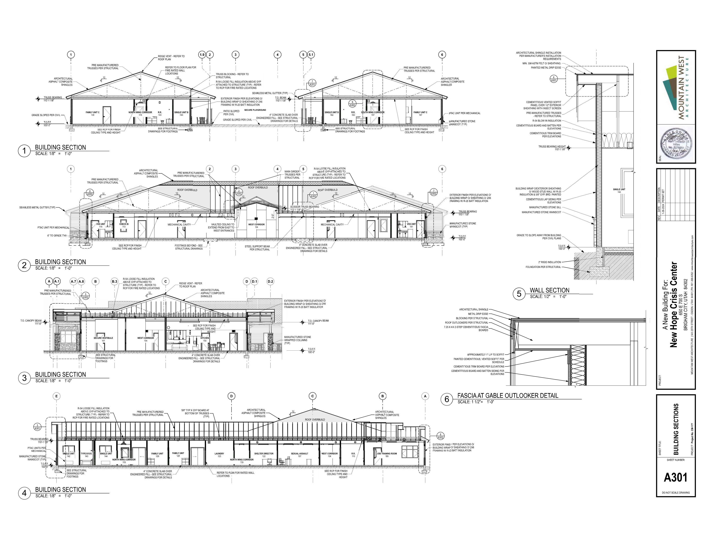

2 actual PDFsA103 source plus FP2.0 approved answer
43 x 60.75 ftbounded gable model
4:12source roof pitch
7 TY4180six-foot ridge spacing
Release closedcalibration is not engineering approval



PDF-to-3D calibration modelLoading exact bounded geometry...
permitted head bandridge branch lineapproved FP2.0 texture below
System-owned verification loops
PrimaryModel JSON deterministically reproduces two roof planes, one ridge branch, and seven six-foot-spaced heads.
Cross-sourceA103, approved FP2.0, S102/S301 structural evidence, and TFP610 manufacturer criteria bind the same bounded feature.
AdversarialFresh-placement, exact-Z, obstruction, hydraulics, compliance, fabrication, and release flags cannot be promoted by this calibration proof.
Acceptance boundary
This is the first defensible visual calibration, not a finished automatic design. The next untouched pitched-roof project must reproduce the topology without answer access, and exact truss/member obstruction geometry plus a real hydraulic network must pass before field release.
answerExposedCalibration=true | freshProjectPlacementVerified=false | exactHeadElevationReady=false | obstructionClearanceReady=false | hydraulicCalculationReady=false | complianceReady=false | fabricationReady=false | fieldReleaseReady=false